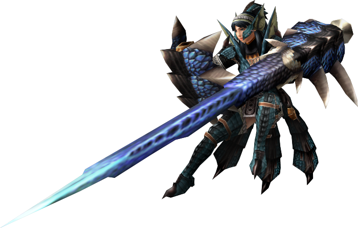

Que es un Cazador?
Los cazadores mas alla del significado de su nombre, podria decirse que son un agente regulador del ecosistema Supervizados por "El Gremio de Cazadores" estos ademas de brindarte una licencia de cazador tambien establecen establecen limites de cual y que cantidad de monstruos puedes cazar,esto es asi para evitar la extincion de ciertas especies en peligro de extincion y para evitar que otras lleguen a ese extremo.Esto tambien es debido a que fue uno de los motivos principales de una guerra ocurrida hace mucho en la que ningun bando se pudo considerar vencedor.
Clases o roles
En el mundo de Monster Hunter los Cazadores se dividen en 2 clases:
Maestros Espada:Son aquellos los cuales blanden armas cuerpo a cuerpo,que dependiendo de cual
pueden tener un alcance corto y medio.
Su armaduras estan preparadas para un constante combate cuerpo a cuerpo por los que sus
defensas fisicas y elementales son altas.
Maestro Artillero:Preparados para un ataque a distancia usan distintos tipos de municiones
para abatir a los Montruos con disparos de gran alcance.
Sus armaduras no cuentan con mucha defensa fisica si las comparamos con la de los Maestros Espada
pero los compensan con sus defensas elementales.
Nota:El jugador puede cambiar de clases y las armas que las conforman cuando lo desee.
Espada Larga
La Espada larga o LongSword es un arma de medio alcance con un equilibrio entre ataques rapidos y poderosos una eleccion perfecta para los Cazadores mas experimentados dispuestos a sacrificar su capacidad de adoptar una pose defensiva pormas de unos segundos ,no obstante puede lanzar contra ataques si bloquean en el momento indicado.Posee un equilibrio entre daño raw(daño base del arma) y daño elemental si es que esta arma lo posee.Tambien puede potenciarse asi misma al llenar la barra espiritu.
Gran Espada
El arma con mas daño entre todas capaz de cargar sus ataques hasta 3 veces su potencia de ataque, tiene una movilidad reducida pero lo compensa con su capacidad de bloquear, pero al no ser un arma destinada para esto perderas rapidamente estamina tras cada golpe recibido.Arma de medio alcance.
Espada y Escudo
El arma ideal para Cazadores novatos, no presume de tener el mejor alcance de todos, mas bien siendo un arma para un combate muy cercano, rapida y agil con la capacidad de cubrirse con su escudo rapidamente pero si recibe ataques de gran poder te hara retrocerder y te dejara expuesto y tambien permite usar items mientras el arma esta desenfundada.Puede compensar su daño raw con su daño elemental.
Dagas Duales
Son dos dagas de corto alcance con el mayor daño por segundo de todas las armas,suelen tener un daño raw bajo y elemental tambien pero gracias a su alta velocidad de ataque,su movilidad y la posibilidad de llevar 2 elementod distintos a la vez la hace un arma muy viable para aquellos que desean abrumar alos objetivos con muchos ataques sin la posibillidad de cubrirse.Armas de corto alcance
Lanza y Escudo
Si quieres ser la muralla de tu equipo y detener todos lo que se te ponga en frente esta es tu arma, tiene la mejor defensa de todas,rara vezte haran retrocerder ya sea por el tipo de ataque o por que se te acabo la estamina,cuenta con un daño raw y elemental decente.Arma de largo alcance
Lanza Pistola
Muy parecida al arma anterior solo que con un poco menos de alcance debido a la particularidad de que la punta del arma es un cañon de gran poder capaz de hacer varios disparos explosivos cuerpo a cuerpo o uno solo muy potente(el armade se sobre calentara y no podras lanzar este ataque durante cierto periodo de tiempo )
martillo
Arma de medio-corto alcance con un ataque comparable al de la Gran Espada puede cargar unn poderoso ata que mientras corre o esta quieto,no suelen tener un gran daño elemental debido a su daño raw alto ademas esta armas puede aturdir Monstruos si se les da repetitamente en la capeza ademas sirve para romper partes de estos
Cuerno de Caza
Parecido al martillo puede aturdir al enemigo y cuenta con un ataque muy alto, pero la principal funcionalidad de esta armas es tocarla como un instrumen para darle beneficios al usuario y a sus compañeros,ya sea curarses,subida de atq, subida de defensa, mas estamina maxima, etc.. Estaras expuesto al tocar la melodias asi que ten cuidado.
Glaive insecto
Arma acrobatica capa de hacerte saltar muy alto y hacer maniobras evasivas sin comparacion cuenta con daño elemental raw equilibrados.Cuenta con con un insecto especial al que puedes indicar que parte del monstruo atacar,dependiendo de que parte ataque el insecto extraera liquido de esa parte(Naranja:Cabeza, Rojo:Cuerpo, Blanco: Cola).Al llegar a las muestras podras conseguir una bonificacion de ataque, defensa o vida.
Hacha Espada
Arma de largo y medio alcance, como su nombre lo dice es un hacha,pero su particularidad es que puede transformarse en una espada reduciendo su rango pero permitiendole lanzar ataques inbuidos con el lo que contenga si vial(viales Elementales,de Estados ALterados y Energia).Cada ataque reducira una parte del vial y mas si lanzas el ataque especial el cual una explosion Cargada es relacionada a su vial(Esto agotara el vial y tendras que esperar a que se llene o cambiarlo manualmente,ademas cambiara del modo espada al hacha en el proceso).
Hacha Cargada

Tiene el mismo concepto que el arma anterior pero su modo principal se asemeja a la espada y escudo y su modo alternativo es el hacha en si.Al atacar al objetivo se iran llenando los viales de esta arma, una vez llenos tendras que cargar el escudo con esa energia lo cual permite lanzar ataques cargados con el contenido de vial en ambos modos pero en el modo hacha podras lanzar una cadena de rayos devastadoras al enemigo
Arco y Flecha
Arma de medio-largo alcance,puede cargar su ataques hasta 3 niveles pero esto consumira tu resistencia, pueden ser elementales pero lo caracteristicos es que cuenta con viales de Estados Alterados lo que permite al usuario lanzar ataque elementales y de Estados alterados a la vez.Tiene un ataque especial en el que dispara al aire y deja caer una lluvias de rocas capaces de aturdir a los monstruos.
Ballesta pesada

Un arma a distancia con una movilidad reducida pero con altas cantidades de daño la cual se le pueden añadir mejoras como un cañon pesado que mejora su daño pero aumenta el retroceso del Arma (el retroceso de la ballesta es inversamente proporcional a la velocidad de ataque ),un escudo para cubrirsese ciertos ataques entre otros.Las balletas cuentan con municion especial y hay que aclarar que no todas las balletas permiten cierto tipo de municion asi como el nivel de la municion ya que las balas no elementales se dividen en niveles del 1 al 3 en el que 1 es el mas debil y tres la de mayor daño.
Ballesta Ligera
Considerada la hermana menor del arma anterior debido a su menor daño y modificaciones no siendo menos efectiva por eso tambien se rige por el sistema de municion de la ballesta pesada pero esta cuenta con una movilidad notablemente mayor tiene un caracteristica especial,si el arma lo especifica en sus estadisticas, puede lanzar disparos de repeticion(basta con una municion que especifice el arma como "repeticion" para que un solo disparos de este se conviertan 3 seguidos).
Aclaraciones
La informacion dada de estas armas son mas son generales,osea, la descripcion general del arma se mantiene en todos los juegos pero las caracteristicas especiales varian segun el juegos o directamente no aparecer dependiendo de que titulo y la version del mismo ya que es comun que en los juegos de esta saga tengas por lo menos 2 versiones.